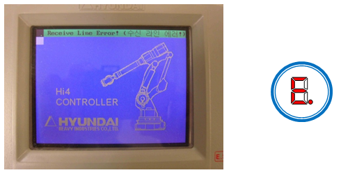
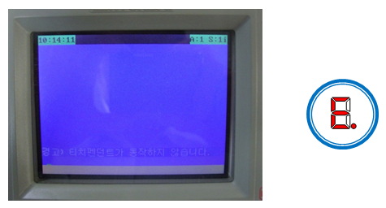
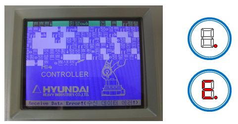
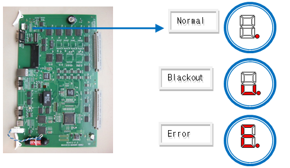
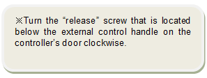
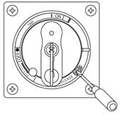

1.1.8.1. Outline
This error occurs when the communication is disconnected between the mainboard (BD412) and the teaching pendant (TP300), and it distinguishes causes for the mainboard and teaching pendant on the screen by displaying different error messages when transmitting or receiving data.
1.1.8.2. Causes and checking methods
1. Please check the following information.
This is to check if the connection line is normal between the mainboard and teaching pendant.
1) DC24V output voltage of SMPS
2) CNRTP connector: Voltage between E,F (DC24V) and G,H (GND)
3) Connection of CNRTP connector
4) Check the TP cable for any damage
2. Communication Line error
"Receive Line Error!" & 7-Seg. from the main board à [E.]

If the initial screen of TP is the same as the picture above
¢º Causes
: Short circuit of the received data line system of the TP cable → [CNTP] pin(A, B)
¢º Measures
(1) Replace the TP cable. If the problem persists, replace the TP300.
(2) If it persists, replace the mainboard.
(3) If the same status persists, please contact our AS department.
"Receive Data Error!" & 7-Seg. from the main board à [E.]
or
Warning) The teaching pendant does not work." & 7-Seg. from the main board : [.]

If the initial screen of TP is the same as the picture above
¢º Causes
- Short circuit of the transmit data line system of the TP cable → [CNTP] pin(C, D)
- Data error is received in the mainboard
¢º ´ëÃ¥
(1) Replace the TP cable. If the problem persists, replace the TP300.
(2) If it persists, replace the mainboard.
(3) If the same status persists, please contact our AS department.
"Receive Data Error!" & 7-Seg. from the main board à [.] or [E.]

If the initial screen of TP is the same as the picture above
¢º Causes
- Short circuit of the Rx/Tx data line system of the TP cable → [CNTP] pin(A, B, C, D)
- Data error is transmitted in the mainboard
¢º Measures
(1) Replace the TP cable. If the problem persists, replace the TP300.
(2) If it persists, replace the mainboard.
(3) If the same status persists, please contact our AS department.
l Reference: 7-segment from the main board

If a controller's door is shut when the power is on, please refer to the diagram below to open the door to check.
  How to open the door while the power is on
|
|
Caution Once the controller is opened, please check only the main board's status, and do not touch anything else for safety reasons. Please make sure to close it after you check the main board's status.
|